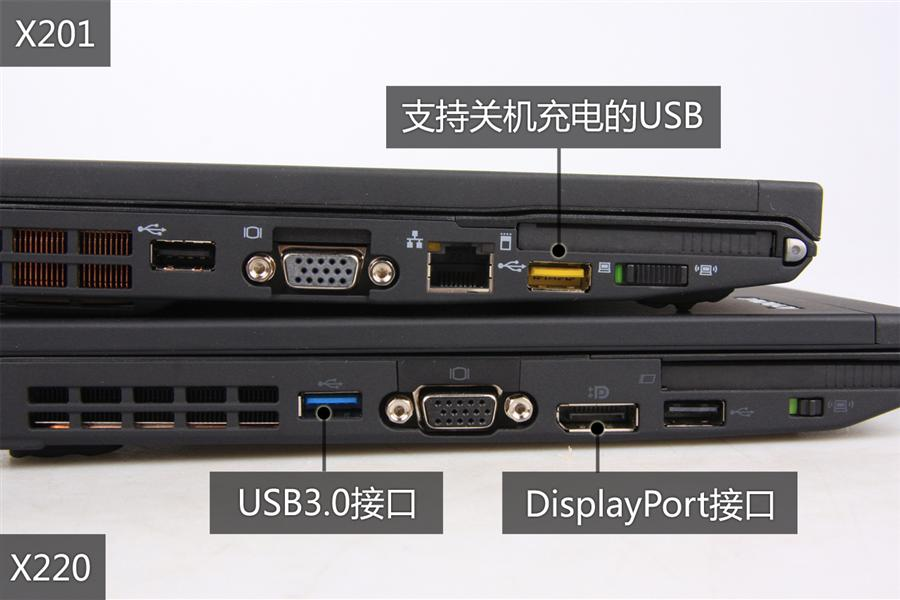

|
一台二手笔记本，联想X220
对一个写作者来说，每天敲击键盘数千次，没有什么比一个好键盘更销魂了。键盘是这样一种小东西，它不贵，但能极大地提高工作和生活的幸福指数。我从2000年购买第一台IBM的X20笔记本开始，就把自己卖给了IBM带小红点的这种键盘，它的手感在笔记本里面无出其右，以至于我把一台2005年出厂的IBM的X40笔记本一直用到了2014年。不过X40也实在太老旧了，这些年它只是我的打字专用机，连打开一个淘宝网页都要好一会儿，简直是浪费生命。
2011年出品的X220是最后一款IBM经典键盘笔记本电脑，从2012的X230开始，ThinkPad的X系列改成了巧克力键盘，很多老用户大吐苦水，包括我。现在的笔记本电脑十有八九都是这种巧克力键盘，手感实在不好，尤其是很多超极本，键程极短，打字让人想死。
选择IBM的X系列第二原因是我需要极端便携，因为我要骑单车跑长途。骑单车上千公里，遇到上坡都恨不得撒泡尿减重，重量超过1.5公斤的笔记本是万万不可的。这台X220如果不要电池，装一个减重模块（假电池），重量约为1.1公斤。
作为一个图片兼纪录片摄影师，我还需要这台笔记本能够较为流利地剪辑高码率1080P视频，比如我常用的松下GH2，其码率约在25Mbps。我今天试验了，X220配8G内存，用Adobe
Premiere Pro CS6做视频剪辑，渲染时间还可以忍受。
我这台X220是顶配的i7 2640M处理器。虽然是2011年32纳米的sandy bridge旧平台，但其性能比新平台的ivy
bridge处理器并不差多少，它弱就弱在显卡，HD3000的非独立显卡实在有点差，还好我不玩游戏。不过，此显卡虽然差，但X220自带了DP口（Display
Port），可以外接1900x1200的24寸显示器。
另外，我这台X220还改装了IPS韩国LG屏幕，颜色非常准，可视角度大，适合做路上的简单Photoshop处理。这是一块二手的IPS屏，右下角有点漏光，这也是IPS屏的通病，还好不算严重，不影响使用。
X220的i7顶配系列有一个USB3.0接口。这个接口太重要了，它外挂移动硬盘的稳定传输速度在每秒90MB左右。我出门的话，每天有好几个G乃至十几个G的图片和视频需要备份到两个移动硬盘（双备份），旧电脑的USB2.0速度最快也只有每秒20多MB，传输十几个G的数据等得人眼发直，想死的心都有。USB3.0必须的啊。
X220别看小，但是它内置mSATA接口，可以装微型SSD固态硬盘，再加上一块传统1TB的，就可以组成双硬盘笔记本。可惜的是，X220的mSATA接口是SATAII型的，只有主盘位才是SATAIII的。从这个角度来说，2013年的联想K29才是真正的神机，它的mSATA和主盘位都是SATAIII的高速硬盘接口。不过联想K29是廉价机型，浑身散发着一股山寨味，键盘手感稍差，还没有红色指点杆，pass。
我是双十一在淘宝拍的X220，顶配i7
2640m处理器，IPS屏，8G内存，不要硬盘，2800元。再加上一块Intel520系列的120G固态硬盘400元，总共3200元。开机22秒，各种程序秒开，非常爽，估计这台机器能让我坚持两年。
笔记本和手机这种一两年就换新的快速易耗品，没有必要追逐最新型号，上一代的旗舰就很不错。联想现在最新出的Yoga Pro3笔记本是新一代的CoreM处理器，外观非常性感，重量比苹果MacBook
Air还轻，但它也是那种短键程的巧克力键盘，8G内存的版本卖一万元，算了，我还是等等吧。
杨飞，
2014/11/15

|